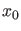
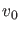

Tangent search order
To start a continuation, an initial point  and a tangent vector  are needed in general. Often, only is available. In this case, MATCONT successively tries all unit vectors as candidate tangent vectors. By default, this is done in increasing order of index (cds.options.TSearchOrder ). If cds.options.TsearchOrder is set to a value different from then the cycling is done in decreasing order of index. See §7.4 for an example.
In cases where the number of continuation variables is large (e.g. when computing limit cycles) the choice of cds.options.TSearchOrder can substantially change the speed of the computation.